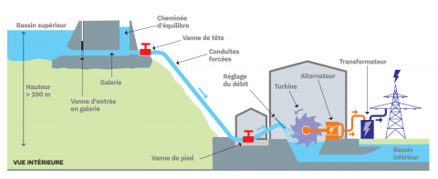
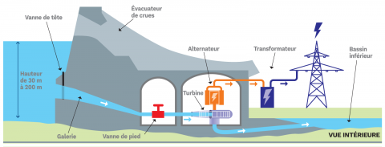
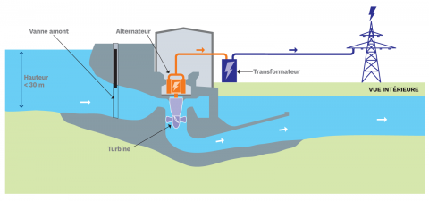
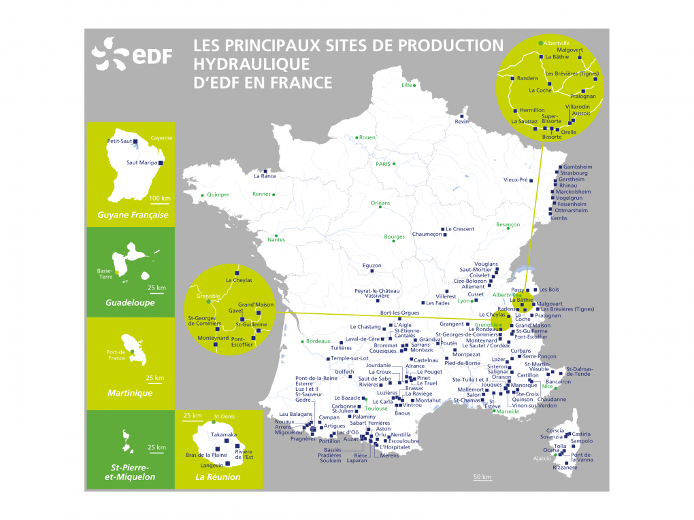

Qu'est-ce que l'énergie hydraulique ?
L'énergie hydraulique permet de fabriquer de l'électricité, dans les centrales hydroélectriques, grâce à la force de l'eau. Cette force dépend soit de la hauteur de la chute d'eau (centrales de haute ou moyenne chute), soit du débit des fleuves et des rivières (centrales au fil de l'eau).
L'énergie hydraulique dépend du cycle de l'eau. Elle est la plus importante source d'énergie renouvelable.
Sous l'action du soleil, l'eau des océans et de la terre s'évapore. Elle se condense en nuages qui se déplacent avec le vent. La baisse de température au-dessus des continents provoque des précipitations qui alimentent l'eau des lacs, des rivières et des océans.
Une centrale hydraulique est composée de 3 parties :
Le barrage qui retient l'eau
La centrale qui produit l'électricité
Les lignes électriques qui évacuent et transportent l'énergie électrique
En France, l'hydroélectricité est exploitée depuis la fin du 19ème siècle, ce qui en fait la plus ancienne des énergies produite grâce à une ressource nationale. EDF exploite 640 barrages dont 150 d'une hauteur supérieure à 20 m.
C'est une énergie qui n'émet pas de gaz à effet de serre, elle est utilisable rapidement grâce aux grandes quantités d'eau stockée et c'est une énergie renouvelable très économique à long terme.
Le schéma de process d'une centrale de haute-chute

Le schéma de process d'une centrale de moyenne chute

Le schéma de process d'une centrale de basse chute ou "fil de l'eau"

Les principaux sites de production hydraulique en France
